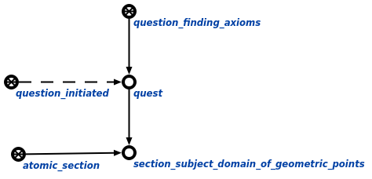

Задачей агента поиска аксиом для заданного раздела является нахождение аксиом заданного раздела. Данный агент инициируется при условии появления в памяти вопросной конструкции, соответствующей запросу поиска аксиом для заданного раздела. Аргументом запроса является атомарный или неатомарный раздел, в рамках которого необходимо найти все аксиомы. Пример вопросной конструкции показан ниже:
